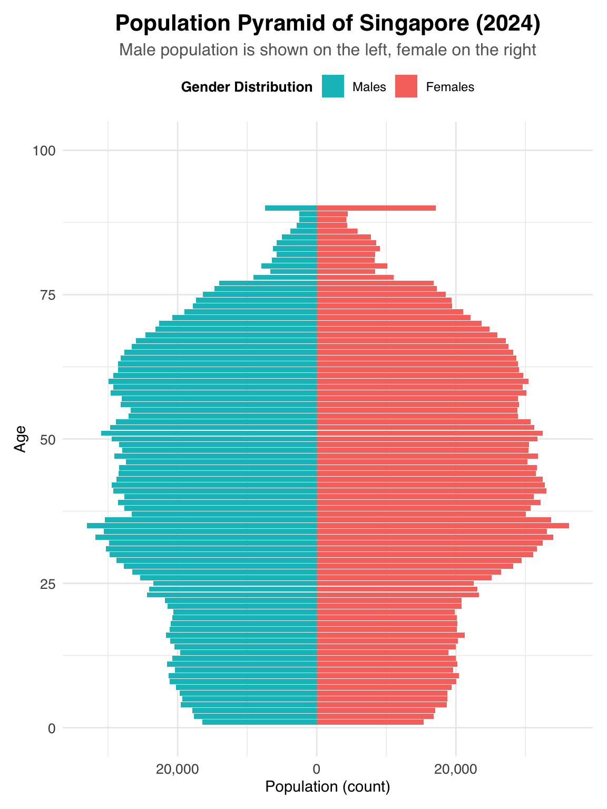
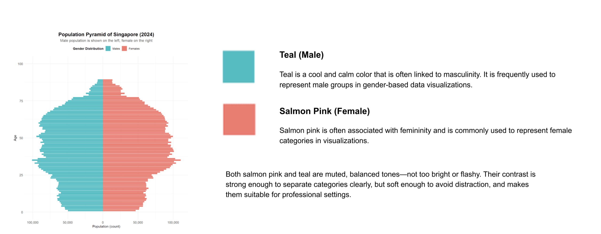
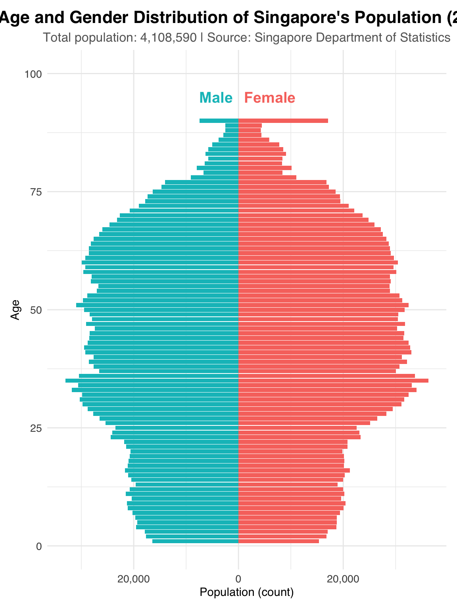
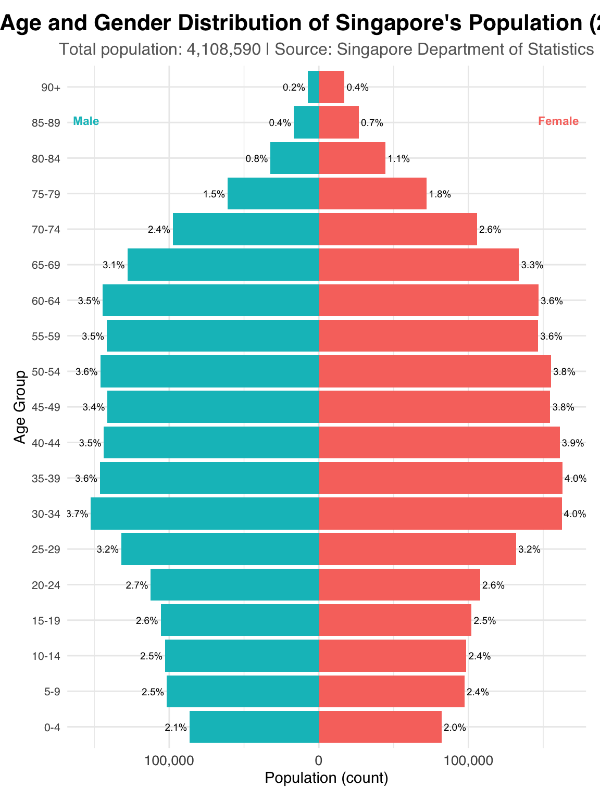
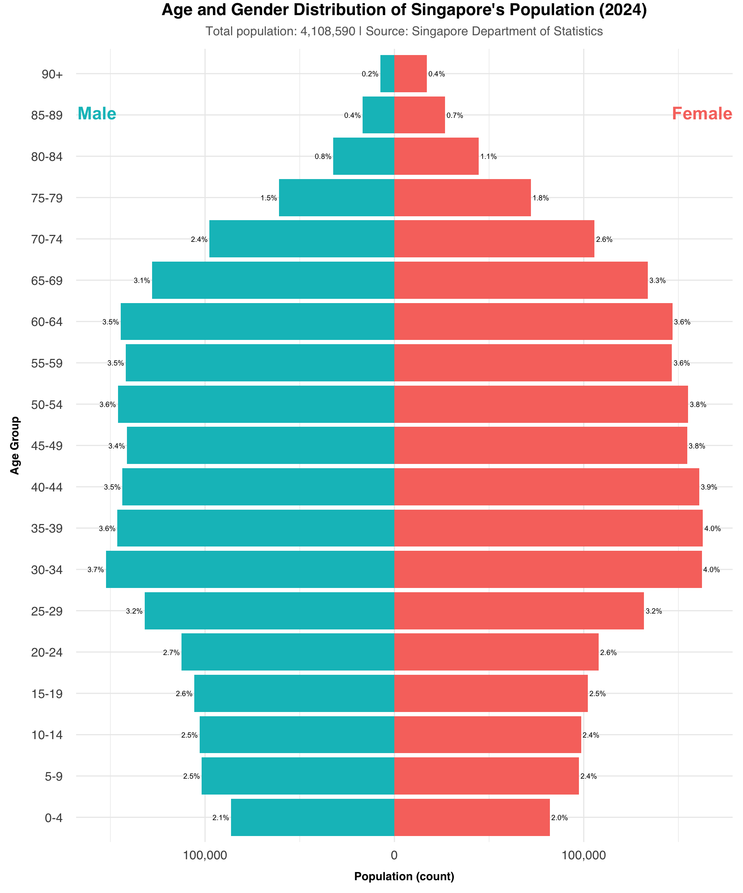

Code
pacman::p_load(tidyverse, readxl, haven, ggrepel,
ggthemes, patchwork, ggridges, ggdist, scales, plotly,
gganimate, gifski, gapminder)Understanding Demographic Structures and Distribution of Singapore in 2024.
In this peer review, I will be analyzing Teo Wee Siang Roy’s visualization of the Singapore (2024) population pyramid.
Effective data visualization plays a crucial role in conveying complex demographic information, and this review will specifically focus on how Roy’s plot balances informative content with aesthetic appeal to ensure accuracy, transparency, and rapid insight communication.
First of all, let’s take a look at this plot that we will be reviewing.

We will also recreate a similar plot based on the idea and code provided by the student. However, since the cleaned dataset used in the original work is not available, we will instead work with a pre-cleaned version of the data.
pacman::p_load(tidyverse, readxl, haven, ggrepel,
ggthemes, patchwork, ggridges, ggdist, scales, plotly,
gganimate, gifski, gapminder)pop_data <- read_csv("~/Documents/SMU/April Term 2/Visual Analytics/patriciatrisno/ISSS608-VAA/Take-home_Exercise/Take-home_Ex01/data/respopagesex2024/respopagesex2024.csv")We are using pre-cleaned data based on the description shared by the student. Please note that some specific cleaning steps—such as the removal of rows with zero population—may not be interpreted in exactly the same way.
In our version, we interpret areas with constant zero or near-zero population as likely being non-residential zones. These could include industrial areas, commercial districts, nature reserves, or national parks. Therefore, we have removed subzones that show consistently zero or almost entirely zero population counts.
However, subzones with very low but non-zero populations (approximately 0–40 residents) are kept in the dataset. We believe these areas may still offer valuable insights due to their potentially unique characteristics.
While subzones like Dunearn,Moulmein,Kent Ridge,Pasir Panjang 1 & 2,Institution Hill,Robertson Quay,Sentosa,Tyresall, and Springleaf may represent pockets of unique demographics within Singapore, making them important to retain for further analysis.
pop_data <- pop_data[,!names(pop_data) %in% c("Time")]
subzones_to_exclude <- c("Liu Fang", "Samulun", "Shipyard", "Tukang", "City terminals", "Singapore General Hospital", "Central Water Catchment", "Changi Airport", "Changi Bay", "Pandan", "Toh Tuck", "Anson", "Bayfront Subzone", "City Hall", "Clifford Pier", "Marina Centre", "Maxwell", "Nicoll", "Phillip", "Raffles Place", "Kallang Way", "Defu Industrial Park", "Lorong Halus", "International Business Park", "Jurong Port", "Jurong River", "lakeside (Business)", "Penjuru Crescent", "Chin Bee", "Kian Teck", "Safti", "Kallang Bahru", "Lim Chu Kang", "Mandai East", "Mandai West", "Bras Basah", "Marina East", "Marina South", "East Coast", "Marina East (Mp)", "Istana Negara", "North-Eastern Islands", "Somerset", "China Square", "People's Park", "Pasir Ris Wafer fab Park", "Airport Road", "Paya Lebar East", "Paya Lebar North", "Paya Lebar West", "Plab", "Benoi Sector", "Gul Basin", "Gul Circle", "Joo Koon", "Pioneer Sector", "Coney Island", "Punggol Canal", "National University Of S'pore", "Port", "Queensway", "Singapore Polytechnic", "Paterson", "Kampong Glam", "Mackenzie", "Rochor Canal", "Selegie", "Pulau Punggol Barat", "Pulau Punggol Timor", "Seletar", "Seletar Aerospace Park", "Lorong Halus North", "Sengkang West", "Senoko North", "The Wharves", "Serangoon North Ind Estate", "Pulau Seletar", "Simpang North", "Simpang South", "Tanjong Irau", "Boat Quay", "Clarke Quay", "Southern Group", "Straits View", "Gali Batu", "Kranji", "Pang Sua", "Reservoir View", "Brickland", "Brickland", "Forest Hill", "Garden", "Park", "Tengah Industrial Estate", "Tengeh", "Tuas Bay", "Tuas North", "Tuas Promenade", "Tuas View", "Tuas View Extension", "Jurong Island And Bukom", "Semakau", "Sudong", "Bahar", "Cleantech", "Greenwood Park", "Midview", "Senoko West", "Woodlands Regional Center", "Nee Soon", "Yio Chu Kang", "Yio Chu Kang North", "City Terminals", "Changi Point", "Bugis", "Tanjong Pagar", "Bukit Merah", "Cecil", "Jurong Gateway", "Lakeside (Leisure)", "Kampong Bugis", "Mandai Estate", "Dhoby Ghaut", "Goodwood Park", "Newton Circus", "Monk's Hill", "Orange Grove", "Malcolm", "Mount Pleasant", "Boulevard", "Tanglin","Loyang East", "Loyang West", "One North", "One Tree Hill", "Oxley", "Bencoolen", "Farrer Park", "Little India", "Mount Emily", "Sungei Road", "Victoria", "Sembawang Straits", "Turf Club", "Xilin", "Ridout", "Murai", "Yishun")
pop_data <- subset(pop_data, !(SZ %in% subzones_to_exclude))
colnames(pop_data) <- c('PA','Subzone','Age','Sex','Population')
pop_data$Age[pop_data$Age == "90_and_Over"] <- "90"
pop_data<- pop_data %>%
mutate(Age = as.numeric(Age))
pop_data# A tibble: 34,580 × 5
PA Subzone Age Sex Population
<chr> <chr> <dbl> <chr> <dbl>
1 Ang Mo Kio Ang Mo Kio Town Centre 0 Males 10
2 Ang Mo Kio Ang Mo Kio Town Centre 0 Females 10
3 Ang Mo Kio Ang Mo Kio Town Centre 1 Males 10
4 Ang Mo Kio Ang Mo Kio Town Centre 1 Females 10
5 Ang Mo Kio Ang Mo Kio Town Centre 2 Males 10
6 Ang Mo Kio Ang Mo Kio Town Centre 2 Females 10
7 Ang Mo Kio Ang Mo Kio Town Centre 3 Males 10
8 Ang Mo Kio Ang Mo Kio Town Centre 3 Females 10
9 Ang Mo Kio Ang Mo Kio Town Centre 4 Males 30
10 Ang Mo Kio Ang Mo Kio Town Centre 4 Females 10
# ℹ 34,570 more rowspyramid_data <- pop_data %>%
filter(Sex %in% c("Males", "Females")) %>%
mutate(Population = ifelse(Sex == "Males", -Population, Population))
ggplot(pyramid_data, aes(x = Age, y = Population, fill = Sex)) +
geom_bar(stat = "identity", width = 0.9) +
coord_flip() + scale_x_continuous(limits = c(0, 100)) +
scale_y_continuous(labels = function(x) comma(abs(x))) +
scale_fill_manual(
values = c("Males" = "#00bfc4", "Females" = "#f8766d"),
breaks = c("Males", "Females"),
labels = c("Males", "Females")
) +
labs(
title = "Population Pyramid of Singapore (2024)",
subtitle = "Male population is shown on the left, female on the right",
x = "Age",
y = "Population (count)",
fill = "Gender Distribution"
) +
theme_minimal(base_family = "Helvetica") +
theme(
plot.title = element_text(size = 16, face = "bold", hjust = 0.5),
plot.subtitle = element_text(size = 12, hjust = 0.5,color = "grey40"),
axis.text = element_text(size = 10),
axis.title = element_text(size = 11),
legend.position = "top",
legend.title = element_text(size = 10, face = "bold"),
legend.text = element_text(size = 9),
plot.margin = margin(10, 10, 10, 10)
) 
The plot generated here may not look exactly the same as the original—especially in terms of population distribution. This difference is likely due to the different rules we used for eliminating certain subzones or cities during data cleaning.
However, our main focus is not on matching the exact numbers or areas used, but rather on understanding how to use a population pyramid plot to effectively communicate insights about population structure. The goal is to show how visual design can help present demographic patterns clearly and meaningfully.
The choice of font for the title and descriptions is both clean and easy to read. Using bold for the title helps grab attention and gives readers a quick idea of what the plot is about. This is important for guiding the audience right from the start.
The subtitle is styled with a smaller font size and a lighter color, which clearly signals that it provides additional context. This visual hierarchy makes it easier to process the information at a glance.
Design principles highlighted: Transparency, fast communication of key insights.

The use of different colors—teal for males and salmon pink for females—clearly separates the two groups. This color distinction, supported by a clear legend at the top, helps viewers easily understand the data.
The colors are also aesthetically pleasing and not overwhelming. They’re appropriate for representing gender categories, with salmon often used for females and teal for males.
Design principles highlighted: Clarity, accuracy, and effective communication.

The vertical axis shows age groups in ascending order, starting from age 0 at the bottom to 100 at the top. This logical ordering aligns with how we typically interpret age data, making the plot intuitive to read.
The population bars are arranged symmetrically around a central axis, which allows for easy comparison between male and female population sizes within each age group. This mirrored layout is not only visually balanced but also enhances the plot’s accuracy and readability.
Design principles highlighted: Accuracy, visual balance, and meaningful comparison.
In this part we will briefly take a look, on three parts that can be improved.

The title “Population Pyramid of Singapore (2024)” can be more specific.
The subtitle “Male population is shown on the left, female on the right” is helpful, but since the colors already show gender differences clearly, the legend might not be needed. Also, the plot doesn’t make full use of the empty space to explain or give more useful information.

Both approaches—displaying the full age distribution and grouping ages into bins—serve different analytical purposes.
Showing each individual age can be helpful when precise, granular insights are needed, such as identifying specific age spikes or anomalies.
On the other hand, grouping ages into broader intervals helps simplify the data, making it easier to observe general demographic patterns and trends across age ranges. This binning approach enhances readability and supports more effective comparisons between larger population segments.
The original chart displays age values up to 100, which does not align with the source data that categorizes all individuals aged 90 and above into a single group. This can lead to misinterpretation.
Also, the horizontal axis shows large numbers like 50,000 or 100,000 without explanation, which might be confusing for some audiences. While the chart gives a lot of information, it’s not easy to quickly understand the exact number of people in each group. Without clear numbers or percentages, it’s hard for viewers to get a good sense of how many people are in each age or gender category.

Building upon the identified areas for improvement, this section outlines specific adjustments to enhance the population pyramid’s effectiveness.
In this section We will begin by outlining several ways to improve the visualization, followed by the revised code.
#Calculate the total pop
total_pop <- pop_data %>%
filter(Sex %in% c("Males", "Females")) %>%
summarise(total = sum(Population)) %>%
pull(total) %>%
format(big.mark = ",", scientific = FALSE)
#Pyramid
pyramid_data <- pop_data %>%
filter(Sex %in% c("Males", "Females")) %>%
mutate(Population = ifelse(Sex == "Males", -Population, Population))
ggplot(pyramid_data, aes(x = Age, y = Population, fill = Sex)) +
geom_bar(stat = "identity", width = 0.9) +
coord_flip() + scale_x_continuous(limits = c(0, 100)) +
scale_y_continuous(labels = function(x) comma(abs(x))) +
scale_fill_manual(
values = c("Males" = "#00bfc4", "Females" = "#f8766d"),
breaks = c("Males", "Females"),
labels = c("Males", "Females"),
guide = "none"
) +
# Add direct labels for Male and Female
annotate("text", x = 95, y = -max(abs(pyramid_data$Population)) * 0.9,
label = "Male", color = "#00bfc4", size = 5, fontface = "bold",
hjust = 1) +
annotate("text", x = 95, y = max(abs(pyramid_data$Population)) * 0.9,
label = "Female", color = "#f8766d", size = 5, fontface = "bold",
hjust = 0) +
labs(
title = "Age and Gender Distribution of Singapore's Population (2024)", #change the title
subtitle = paste("Total population:", total_pop, "| Source: Singapore Department of Statistics"),
x = "Age",
y = "Population (count)",
fill = "Gender Distribution"
) +
theme_minimal(base_family = "Helvetica") +
theme(
plot.title = element_text(size = 16, face = "bold", hjust = 0.5),
plot.subtitle = element_text(size = 12, hjust = 0.5,color = "grey40"),
axis.text = element_text(size = 10),
axis.title = element_text(size = 11),
legend.position = "top",
legend.title = element_text(size = 10, face = "bold"),
legend.text = element_text(size = 9),
plot.margin = margin(10, 10, 10, 10)
)
Group ages into intervals like 5-year or 10-year ranges (e.g., 0–4, 5–9), which would make the chart easier to read and interpret.
For the “90 and above” group, clearly label it as such to better representation, and interpretation.
Add a secondary information showing percentage of total population, which helps viewers compare groups more fairly, especially if the population size is uneven across age groups.
# Calculate the total pop
total_pop <- pop_data %>%
filter(Sex %in% c("Males", "Females")) %>%
summarise(total = sum(Population)) %>%
pull(total)
total_pop_formatted <- format(total_pop, big.mark = ",", scientific = FALSE)
# Define the desired order of age groups
age_group_order <- c(
"0-4", "5-9", "10-14", "15-19", "20-24", "25-29", "30-34", "35-39",
"40-44", "45-49", "50-54", "55-59", "60-64", "65-69", "70-74",
"75-79", "80-84", "85-89", "90+"
)
# Group ages into 5-year intervals
pyramid_data_grouped <- pop_data %>%
filter(Sex %in% c("Males", "Females")) %>%
mutate(AgeGroup = case_when(
Age >= 90 ~ "90+",
TRUE ~ paste0(floor(Age / 5) * 5, "-", floor(Age / 5) * 5 + 4)
)) %>%
group_by(AgeGroup, Sex) %>%
summarise(Population = sum(Population), .groups = 'drop') %>%
mutate(Population_neg = ifelse(Sex == "Males", -Population, Population),
Percentage = (Population / total_pop) * 100) %>%
# Set the order of AgeGroup factor
mutate(AgeGroup = factor(AgeGroup, levels = age_group_order))
# Pyramid plot with grouped ages and percentage labels
ggplot(pyramid_data_grouped, aes(x = AgeGroup, y = Population_neg, fill = Sex)) +
geom_bar(stat = "identity", width = 0.9) +
coord_flip() +
scale_y_continuous(labels = function(x) comma(abs(x))) +
scale_fill_manual(
values = c("Males" = "#00bfc4", "Females" = "#f8766d"),
breaks = c("Males", "Females"),
labels = c("Males", "Females"),
guide = "none"
) +
# Add direct labels for Male and Female
annotate("text", x = nlevels(pyramid_data_grouped$AgeGroup) * 0.95, y = -max(abs(pyramid_data_grouped$Population_neg)) * 0.9,
label = " Male", color = "#00bfc4", size = 3, fontface = "bold",
hjust = 1) +
annotate("text", x = nlevels(pyramid_data_grouped$AgeGroup) * 0.95, y = max(abs(pyramid_data_grouped$Population_neg)) * 0.9,
label = "Female ", color = "#f8766d", size = 3, fontface = "bold",
hjust = 0) +
# Add percentage labels
geom_text(aes(label = sprintf("%.1f%%", Percentage)),
hjust = ifelse(pyramid_data_grouped$Sex == "Males", 1.1, -0.1),
size = 2.5) +
labs(
title = "Age and Gender Distribution of Singapore's Population (2024)", #change the title
subtitle = paste("Total population:", total_pop_formatted, "| Source: Singapore Department of Statistics"),
x = "Age Group",
y = "Population (count)",
fill = "Gender Distribution"
) +
theme_minimal(base_family = "Helvetica") +
theme(
plot.title = element_text(size = 16, face = "bold", hjust = 0.5),
plot.subtitle = element_text(size = 12, hjust = 0.5,color = "grey40"),
axis.text.y = element_text(size = 8), # Adjust y-axis text size
axis.text.x = element_text(size = 10),
axis.title = element_text(size = 11),
legend.position = "top",
legend.title = element_text(size = 10, face = "bold"),
legend.text = element_text(size = 9),
plot.margin = margin(10, 10, 10, 10)
)
Create more space between the axis labels and the bars, so everything looks cleaner and easier to read.
Adjust the font size of ‘Female’ and ‘Male’ annotation. Adjust the figure size to better fit the page. Bold the axis title for greater emphasis to the labels.
Remove extra space after 90.
# Calculate the total pop
total_pop <- pop_data %>%
filter(Sex %in% c("Males", "Females")) %>%
summarise(total = sum(Population)) %>%
pull(total)
total_pop_formatted <- format(total_pop, big.mark = ",", scientific = FALSE)
# Define the desired order of age groups
age_group_order <- c(
"0-4", "5-9", "10-14", "15-19", "20-24", "25-29", "30-34", "35-39",
"40-44", "45-49", "50-54", "55-59", "60-64", "65-69", "70-74",
"75-79", "80-84", "85-89", "90+"
)
# Group ages into 5-year intervals
pyramid_data_grouped <- pop_data %>%
filter(Sex %in% c("Males", "Females")) %>%
mutate(AgeGroup = case_when(
Age >= 90 ~ "90+",
TRUE ~ paste0(floor(Age / 5) * 5, "-", floor(Age / 5) * 5 + 4)
)) %>%
group_by(AgeGroup, Sex) %>%
summarise(Population = sum(Population), .groups = 'drop') %>%
mutate(Population_neg = ifelse(Sex == "Males", -Population, Population),
Percentage = (Population / total_pop) * 100) %>%
# Set the order of AgeGroup factor
mutate(AgeGroup = factor(AgeGroup, levels = age_group_order))
# Pyramid plot with grouped ages and percentage labels
ggplot(pyramid_data_grouped, aes(x = AgeGroup, y = Population_neg, fill = Sex)) +
geom_bar(stat = "identity", width = 0.9) +
coord_flip() +
scale_y_continuous(labels = function(x) comma(abs(x))) +
scale_fill_manual(
values = c("Males" = "#00bfc4", "Females" = "#f8766d"),
breaks = c("Males", "Females"),
labels = c("Males", "Females"),
guide = "none"
) +
# Add direct labels for Male and Female
annotate("text", x = nlevels(pyramid_data_grouped$AgeGroup) * 0.95, y = -max(abs(pyramid_data_grouped$Population_neg)) * 0.9,
label = " Male", color = "#00bfc4", size = 6, fontface = "bold",
hjust = 1) +
annotate("text", x = nlevels(pyramid_data_grouped$AgeGroup) * 0.95, y = max(abs(pyramid_data_grouped$Population_neg)) * 0.9,
label = "Female ", color = "#f8766d", size = 6, fontface = "bold",
hjust = 0) +
# Add percentage labels
geom_text(aes(label = sprintf("%.1f%%", Percentage)),
hjust = ifelse(pyramid_data_grouped$Sex == "Males", 1.1, -0.1),
size = 2.5) +
labs(
title = "Age and Gender Distribution of Singapore's Population (2024)", #change the title
subtitle = paste("Total population:", total_pop_formatted, "| Source: Singapore Department of Statistics"),
x = "Age Group",
y = "Population (count)",
fill = "Gender Distribution"
) +
theme_minimal(base_family = "Helvetica") +
theme(
plot.title = element_text(size = 16, face = "bold", hjust = 0.5, vjust=3),
plot.subtitle = element_text(size = 12, hjust = 0.5,vjust=3,color = "grey40"),
axis.text.y = element_text(size = 12, margin = margin(r = 10, l = 0)), # Add right margin
axis.text.x = element_text(size = 12, margin = margin(t = 5, b = 0)), # Add top margin
axis.title.x = element_text(margin = margin(t = 10, b = 0), face = "bold"), # Add top margin to x-axis title
axis.title.y = element_text(margin = margin(r = 10, l = 0), face = "bold"), # Add right margin to y-axis title
legend.position = "top",
legend.title = element_text(size = 10, face = "bold"),
legend.text = element_text(size = 9),
plot.margin = margin(10, 10, 10, 10)
)
Through each part, now we can see how this plot is improved.